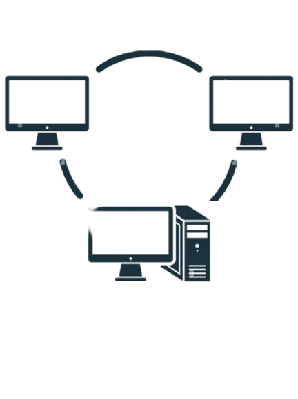

O Curso Profissional de Técnico de Informática
Tem como objetivo formar profissionais capacitados para instalar, configurar e manter sistemas informáticos, redes locais, equipamentos e softwares, com foco em ambientes corporativos e domésticos.
Arquitetura de ComputadoresNesta disciplina estudamos os componentes físicos do computador, como CPU, memória, dispositivos de entrada/saída, entre outros. |
 |
para saber mais sobre os UFCDs da disciplina, clique em "mais" em baixo.
UFCD 0772 – Sistemas Operativos: Instalação e Configuração (25h)
Ensina a instalar, configurar e personalizar sistemas operativos em computadores.
UFCD 0773 – Rede Local: Instalação (25h)
Aborda a instalação física de redes locais, incluindo cabos, dispositivos e topologias de rede.
UFCD 0774 – Rede Local: Instalação de Software Base (50h)
Foca-se na instalação e configuração do software essencial ao funcionamento de uma rede local.
UFCD 0775 – Rede Local: Administração (50h)
Desenvolve competências na gestão e manutenção de redes locais, como contas de utilizador, permissões e partilhas.
UFCD 0788 – Instalação e Administração de Servidores Web
Ensina a configurar e gerir servidores web, incluindo alojamento de sites e segurança dos serviços.
Aplicações InformáticasFocada no uso de softwares de produtividade como editores de texto, planilhas, apresentações, e ferramentas de colaboração. |
para saber mais sobre os UFCDs da disciplina, clique em "mais" em baixo.
UFCD 0754 – Processador de Texto (50h)
Ensina a criar, formatar e editar documentos utilizando programas como Microsoft Word ou similares.
UFCD 0778 – Folha de Cálculo (50h)
Foca-se na utilização de folhas de cálculo para realizar cálculos, criar gráficos e automatizar tarefas com fórmulas e funções.
UFCD 0776 – Sistema de Informação da Empresa (25h)
Apresenta o papel dos sistemas de informação no apoio à gestão e à tomada de decisões nas empresas.
UFCD 0779 – Utilitário de Apresentação Gráfica (25h)
Ensina a criar apresentações visuais e interativas com software como PowerPoint ou equivalente.
UFCD 0780 – Aplicações de Gestão Administrativa (50h)
Explora o uso de software de apoio à contabilidade, faturação, gestão de stocks e outros processos administrativos.
Introdução ao desenvolvimento de software, lógica de programação, estruturas de controle e linguagens como C, C++, Python, JavaScript, etc.
para saber mais sobre os UFCDs da disciplina, clique em "mais" em baixo.
Programação (400h)
Esta área cobre os fundamentos e técnicas de programação, desde o básico até conceitos avançados em várias linguagens.
UFCD 0782 – Programação em C/C++: Estrutura Básica e Conceitos Fundamentais (50h)
Introdução à sintaxe, variáveis, tipos de dados e estruturas básicas de programas em C/C++.
UFCD 0783 – Programação em C/C++: Ciclos e Decisões (50h)
Aprendizagem de estruturas de controlo, como loops e condicionais em C/C++.
UFCD 0784 – Programação em C/C++: Funções e Estruturas (50h)
Implementação e uso de funções, bem como estruturas de dados em C/C++.
UFCD 0785 – Programação em C/C++: Formas Complexas (50h)
Conceitos avançados, como apontadores, manipulação de memória e programação modular.
UFCD 0792 – Criação de Páginas para a Web em Hipertexto (25h)
Introdução ao desenvolvimento web com HTML para estruturar páginas.
UFCD 0793 – Scripts CGI e Folhas de Estilo (25h)
Aprendizagem de scripts para interação web e utilização de CSS para estilos.
UFCD 10791 – Desenvolvimento de Aplicações Web em JAVA (50h)
Desenvolvimento de aplicações web utilizando a linguagem Java.
UFCD 0789 – Fundamentos de Linguagem JAVA (50h)
Conceitos básicos e estrutura da programação em Java.
UFCD 0791 – Programação em JAVA: Avançada
Exploração de tópicos avançados em Java, como orientação a objetos e frameworks.
Aprendemos a modelar, criar e consultar bases de dados, além de compreender o funcionamento de sistemas de informação.
para saber mais sobre os UFCDs da disciplina, clique em "mais" em baixo.
Sistemas de Informação e Bases de Dados (250h)
Esta área aborda o estudo, implementação e gestão de sistemas de informação e bases de dados.
UFCD 0781 – Análise de Sistemas de Informação (50h)
Ensina a analisar e modelar sistemas de informação para responder às necessidades das organizações.
UFCD 0786 – Instalação e Configuração de Sistemas de Gestão de Bases de Dados (50h)
Foca-se na instalação e configuração de software para gestão de bases de dados, como MySQL ou SQL Server.
UFCD 0787 – Administração de Bases de Dados (50h)
Desenvolve competências para gerir, manter e otimizar bases de dados em ambientes profissionais.
UFCD 10793 – Fundamentos de Python (50h)
Introdução à programação em Python, com foco em aplicações práticas para sistemas de informação.
UFCD 10789 – Metodologias de Desenvolvimento de Software (25h)
Apresenta métodos e práticas para organizar e gerir o desenvolvimento de software.
UFCD 10790 – Projeto de Programação (25h)
Aplicação prática dos conhecimentos de programação através do desenvolvimento de um projeto final.